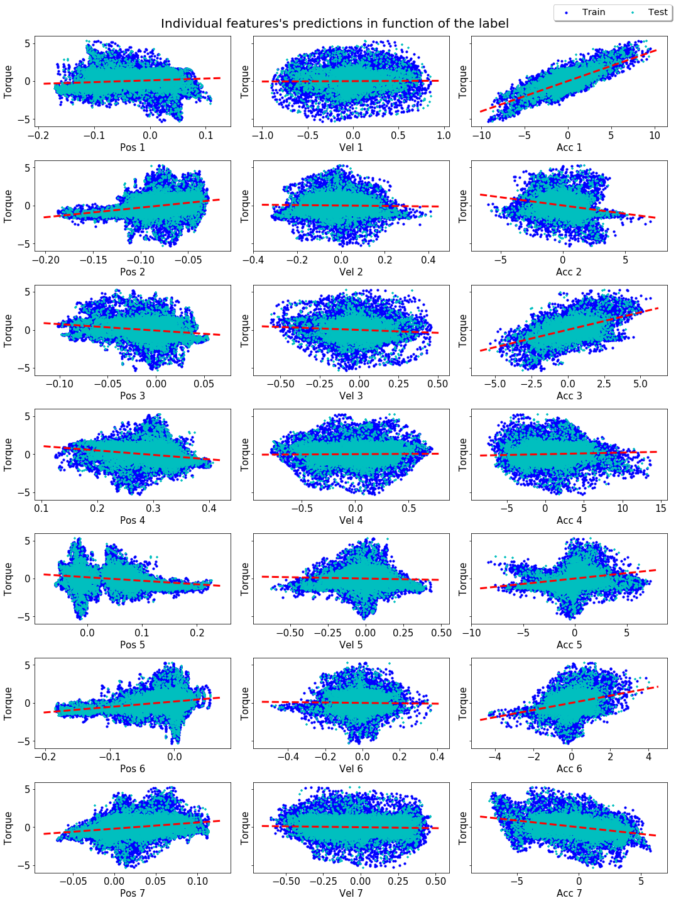
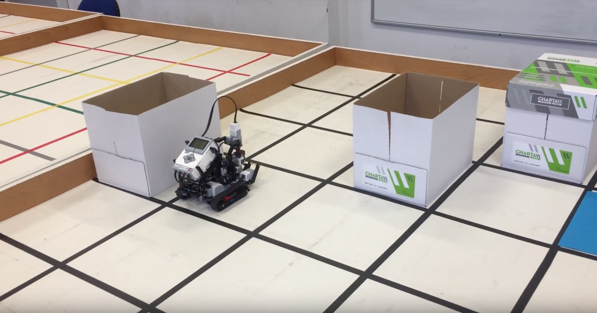

Eklavya Sarkar
Interested in solving real world problems relating to Artificial Intelligence through ML/DL in order to improve and empower the lives of others.
Experienced in predictive modelling, software engineering, full-stack programming, and algorithmic optimisation.
I am keen to apply my passion, perseverance, technical knowledge, and detail-oriented skills to build and improve applications which target solving complex problems.
Currently looking for a new graduate role.
Work Experience
CERN
I worked at CERN for three months, at the CMS Experiment lab, working specifically on the 'CMS-GEM' collaboration, which involved changing particle detector’s technology to Gas Electron Multiplier (GEMs).
- Refined efficiency of production code by implementing requested features on Python scripts.
- Improved code used for testing detector in a QC stand by adding an step-size feature.
- Created method for configuring detector’s electrical state with custom values.
- Published real-time gas levels of a mixer by writing code to send data to a server via an API.
(3 months)


Thesis
Facial Information Extraction
- Attempted to use state-of-the-art deep learning techniques to build models which take an image as input.
- Performed facial detection, recognition, and emotion classification on the present individuals on the images.
- Achieved 95% test accuracy on facial recognition with convolutional neural networks and hyper-parameter tuning.
- Built separate models for tasks such as emotion classification before combining them all into an end-to-end models.
- Optimised performance with deep learning best practices: data augmentation, batch-normalisation, cross validation.
Predicted Grade: 80-90%

Kohonen Self-Organising Maps
- Implemented unsupervised machine learning neural network from ground up without using any specific ML library.
- Trained back-end model on 3 different open-source datasets to test neural network’s efficiency and scalability.
- Developed front-end GUI for interactive data visualisation before and after clustering and dimensionality reduction.
- Wrote extensive thesis covering all aspects of project such as system design, algorithmic optimisation, scalability.
Grade: 90%

Exoplanets: Discoveries and Prospects
- 2019 Update: Dider Queloz has since won the Physics Nobel Prize !
- Conducted literature review on Exoplanets, with inputs from Didier Queloz, co-discoverer of the first exoplanet.
- Showed correlations between possibly habitable planets and core laws of physics by analyzing open-source dataset.
- 50 page report selected among top 2013 student scientific projects in Geneva canton and Pays de Gex.
- Invited to present project at a public ‘Science Sharing’ event at CERN's Universe de Particules museum.
Grade: 6/6

Projects
Deep Reinforcement Learning: Flappy Bird
Attempted to a develop model which is able to learn to play Flappy Bird, and surpass human level scores by using Reinforcement Learning techniques. Specifically investigated Deep Q-Learning networks to develop an overview of the problem and deeper understanding on reinforcement learning techniques. Wished to showcase how computer vision and deep neural networks such as convolutional neural networks can be used in the context of reinforcement learning as well.
Kaggle Competition: Toxic Comment Classification
Attempted to solve a Kaggle competition in a group of three to the best of our abilities. Specifically strove for implementations beyond the exsiting classical ones, and attempted to develop a model which is well-adapted and fine tuned to the specific problem at hand. Implemented a Naive-Bayes Bag of Words model, Random Forest, Extra Trees, and compared their results with the Log Regression, Convolutional Neural Network, and Long Short-Term Memory Recurrent models.

Bayesian Machine Learning
Used Bayesian modelling methods, specifically Hamiltonian Monte Carlo, to approximate Gaussian posterior distributions on a multivariate regression task to derive a good predictor from the dataset, and estimate which of the input variabels are relevant for prediction.
Open Information Extraction
Attempted to summarise Jules Verne's 20,000 leagues under the seas' by training a classifier that indicates which of the part of speech tags each word is. The approach was based on Identifying Relations for Open Information Extraction (Fader, Soderland & Etzioni). To this end, Glove word vectors were employed to implement a logistic one vs all kitchen sink model, and attempted speech tagging on word and sentence levels, named entity resolution and relation extraction.

Neural Computing
Applied modern Deep Learning techniques on the MNIST dataset, while investigating the effects of choosing various (hyper-)parameters on different architectures and types of networks such as Multi-Layered Perceptrons, Convolutional Neural Networks and Auto-Encoders.
Movie Recommendations
Used a collaborative filtering approach to make individual recommendations to users based on MovieLens database using K-NN algorithm. Improved model performance by finding optimal value of k.

Sentiment Analysis on Tweets
Used Naive-Bayes algorithm to implement a logistic sentiment classifier which sorted tweets based on its sentiment. Observed metrics with Confusion Matrices, then attempted to improve performance by developing Linear SVC n-gram models.
Classical Machine Learning Algorithms
Projects involving most of the classical ML techniques, such as Regression Forests, Decision Trees, K-Nearest Neighbours, Naive-Bayes, Gaussian Processes, Linear Regression and many more. It would be too cumbersome to include each one of them seperately.

Robotics I
Wrote a program using the Java LeJOS framework that enables a robot to explore the arena which contains a small number of obstacles, placed at random locations. There was a single coloured sheet of paper which the robots had to be able to detect using the colour sensor which also signifed the end location, to which the robot had optimally navigate back to the ending position.

Robotics II
Wrote a program using the Java LeJOS framework allowing a robot to determine it's starting location in the arena, and optimally work its way to the pre-determined ending position using scout and doctor agents while avoiding the possible obstacles.

Android Food App
Scran is a user-oriented application that aids in the decision-making process when choosing a restaurant, and more specifically a dish. Scran will maintain, search and track user and restaurant data to help its users to choose the dish they didn’t know they wanted.
Moving Average Filter
Wrote C++ in Xcode to generate random plot and noise values of a sinusoidal function using signal characteristics as parameters, which would then be handled by the designed event driven panels and data structures in LabVIEW, and subsequently transferred to Matlab to be displayed in both filtered and unfiltered states.

Competitions
Facebook Hackathon 2015
Developed iOS app with first generation Swift on xCode.
- Goal was to give students a platform to revise and prepare for exams on the go.
- Content specifically tailored to the common first-year Bachelor course.
- Option of adding content for additional modules and courses by users.
- Hopefully improve the student pass rate at EPFL by providing feedback and tips.

News
CERN Intern
FULL Student feature: My summer Internship at CERN
"Arriving wide-eyed at the main lab on the first day, I discovered that I was among twenty other excited students, from all over the world, ranging from Thailand, Brazil, France, US, India, Italy and many others, all of whom had arrived at different moments during the summer, meaning there was little time for individual introductions to the lab and explanations of the various hardware components and the software code base."
Exoplanet Project Presentation
Selected to present on stage my research project on Exoplanets at the Colloque Transfrontalier: La Science en Partage (a public ‘Science Sharing’ event) at CERN’s Universe of Particles museum.
Education
University of Bath
Grade: First Class

University of Liverpool
Grade: First Class

Ecole Polytechnique Fédérale de Lausanne
Skills
- Python - TensorFlow, SkLearn, OpenCV, SeaBorn, Pandas, NumPy, Matplotlib, Flask
- Java - LeJOS
- Javascript - D3.js, jQuery, AJAX
- SQL - MySQL, MySQL Workbench
- C++ - Cern's ROOT
- PHP
- HTML, CSS - Bootstrap
- Tex
- Git, Github
- Linux, Unix
- Databases
- Mattermost
- Shell
Extra-Curricular
President
- Elected President of Hall Committee by ballot vote majority to represent 270 students.
- Enhanced residents’ experience by taking charge and managing events throughout the year.
- Responsible for formulating outline and implementation of vision for Hall’s community and life.
- Led 10 member committee through generating team vision and chairing weekly meetings.
- Maintained professional relationship with residence staff, guild of students, accommodation office and the university.

Interests
- Game of Thrones Expert
- Art - Graphic Design, Wacom Tablet
- Swimming - UK Swimathon 2018, 1.5 km challenge
- Martian Arts - Karaté Green Belt
- Film - Brighton Film School, Summer Filmmaking Diploma
- Project Why NGO Volunteer, New Delhi, India
- Football: Blog posts
- Skiing